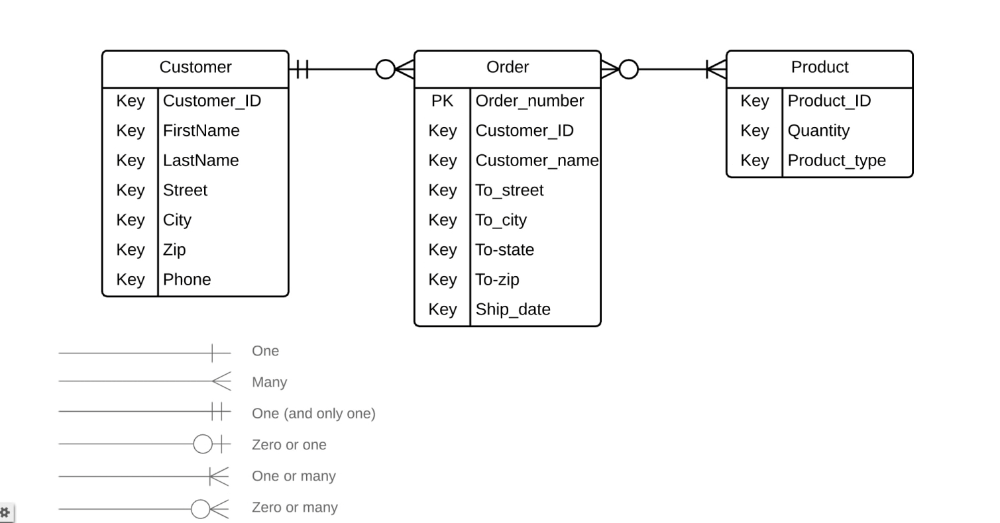

Informatik Noter For:
Forår 2022
Marts
Servere og Databaser:
2. Terminalen
Vi fik startet serveren og begyndte at lave nye funktioner.
3. HTTP
Vi fik introduktion til hvordan man finder ting i dataserveren og hvordan man tilføjer nye data.
4. HTTP Metoder
Get: man bruger "get" til at spørge efter data fra serveren.
Put: man bruger "put" til at sende ny data.
Post: er lidt det samme som put, forskellen er at med "put", kan man sende det samme flere gange, uden at der sker noget, hvorimod der kan komme problemer med "post".
Delete: man bruger sjovt nok "delete" til at slette data.
5. og 6. Find, Update og Delete
Find: i MongoDB bruger man "findOne()" til at finde en bestemt data i ens server.
Update: i MongoDB bruger man kommandoen "updateOne()" til at opdatere data for at ændre det til noget nyt.
Delete: i MongoDB bruger man "deleteOne()" til at slette data fra serveren.
7. ERD
Man bruger entity relationship diagram til at organisere sin database. Man opstiller nogle entitys som "Customer" eller "Order," hvor man skriver nogle ting de indeholder som deres navn og id, derefter forbinder man dem, alt efter f.eks. hvor mange ordre en person kan have eller hvor mange personer en ordre kan være forbundet til.
April
8. Projekt
Vi bliver sat igang med at lave vores egne servere og databaser.
Min gruppe ville lave en satanisk kult hjemmeside, hvor man skulle lave en profil, hvor man så kunne få nogle opgaver (som at dræbe sin nabo). Databasen skulle så gemme, hvem der havde hvilke opgaver.